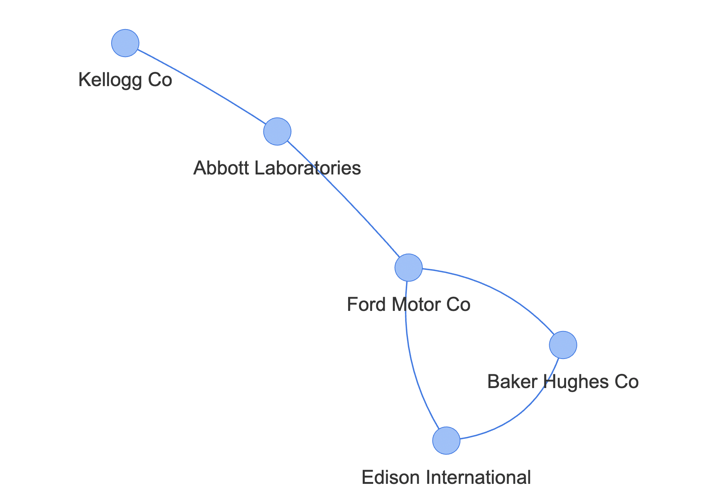

Part of
Graphical models can describe both conditional and unconditional dependence structures in data. One of the most popular models applied to capture these dependencies is the GGM, and algorithms like Graphical Lasso can recover the graph structure of the model, which can then be visualised as a network. As the GGM is linked to the network, this network is based on the linear dependencies of the variables; therefore, it can be used to map out how the assets in the portfolio are connected and able to predict one another. In this network, the assets are represented as nodes, and the relationship tying them together is the connection between the nodes. Where there is no connection between the nodes, those assets are conditionally independent. The nodes can also be highly interconnected, linking with several different assets, while others might be independent or tied to only one other asset. To make the network easier to interpret, a threshold value was used only to highlight the most defining relationships in the data. This threshold was determined at 300, and it was applied to the absolute value of the estimate of the precision matrix.
As illustrated below, the structure of the network can be divided into clusters, which are groups of assets closely connected and interlinked with each other. Most of these clusters are connected through single or multiple connections, forming a spread- out network. There is a cluster of five assets that are not connected to the rest of the data. Other assets are more loosely linked to these clusters, as they are connected to only one asset in it or an asset which is one or several links away from the cluster. These formations are visualised as lines spreading out of the cluster.
An example part of the network is analysed to illustrate the use of the network and highlight the type of connections in the data. The explored part is the cluster of assets which are not interconnected with the rest of the network. This section is made up of the following companies:
These companies are all from different sectors; however, Auto Manufacturing, Electric Utilities and Oil Related Services industries are relatively closely related, which can be a potential reason for their connection. Heavy manufacturing requires significant energy, and tendencies in the auto industry can be influenced by the movements in the oil sector, which could indicate that the returns on assets are affected by the changes in the price of another stock from a different industry. After closer examination of the value chains of these companies, several additional factors can contribute to these connections. For example, one of the suppliers of Edison International is Mitsubishi Heavy Industries Ltd, a company specialising in developing energy systems; it is also engaged in manufacturing steel-making machinery and mechanical systems as well as has several customers in the Oil Related Services for these systems. Baker and Hughes Co, similar to Mitsubishi Heavy Industries Ltd, designs and manufactures heavy machinery in the oil, gas and energy industries. Therefore, changes in the economy or the industry could affect both of these companies, indirectly further connecting Edison International to Baker and Hughes Co.
These assets are also connected via less expected suppliers such as Pricewater- houseCoopers LLP (PwC), a business support services supplier of both Ford Motor Co and Edison International. Furthermore, these companies share major customers and suppliers from the same regions. Other than the USA, Ford Motor Co, Abbott Laboratories and Edison International have suppliers from Canada; Ford Motor Co and Baker Hughes Co trade with Australian companies, whereas Kellogg Co and Abbott Laboratories, have suppliers from Italy. Even though the reasoning behind the connection of these companies is likely to be more complex, analysing these networks can uncover some interesting and unexpected information about the direct and indirect relationships between assets.
